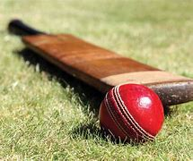
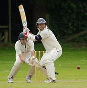
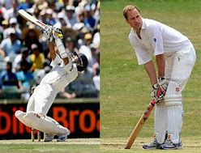
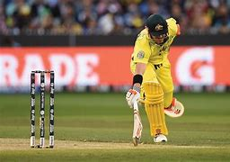

Criquete
HISTÓRIA DO CRÍQUETE.
Também conhecido como Cricket, esse esporte possui sua origem ligada a Inglaterra do século XVII, referindo-se à prática do Futebol, um jogo recreativo apropriado e adaptado pelos nobres(Fernando Jaime,2012).
Figura 26, Críquete.
As primeiras regras esboçadas para o críquete datam de meados da década de 1780, as quais têm sido modificadas e atualizadas ao longo dos anos(Fernando Jaime,2012). O críquete tem origem numa forma rudimentar encontrada em relatos do século XII na Inglaterra(Fernando Jaime,2012).
Existe evidência escrita para um esporte conhecido como o creag, que foi praticado pelo príncipe Eduardo, filho de Eduardo I, na Inglaterra por volta do ano 1300(Fernando Jaime,2012).
• A origem do Críquete no Brasil.
De acordo com a Cricket Brasil, o críquete começou a ser praticado no pais em meados dos anos 1800, no Rio de Janeiro, a partir de traços culturais de ingleses residentes no Brasil na época(Fernando Jaime,2012);
Figura 27, Críquete.

Assim em, função dos laços entre a família monarca Brasileira e a comunidade britânica, o esporte passou a ser praticado no gramado da casa da Princesa Isabel, o qual se tornou o primeiro campo adequado a pratica(Fernando Jaime,2012);
Posteriormente, com a instituição do Brasil República e a mudança da família real, o campo foi assumido como instalação permanente para a prática de futebol(Fernando Jaime,2012);
Com isso, um campo foi construído pela Associação Rio Críquete em Niterói, em 1897, onde foi realizado, no ano seguinte, o primeiro campeonato(Fernando Jaime,2012);
Figura 28, Críquete.
O esporte começou a ganhar adeptos também em São Paulo, culminando na formação de novos clubes em todo o país(Fernando Jaime,2012);
O críquete compôs a edição dos Jogos Olímpicos de Verão na edição Paris 1900, no entanto, foi retirado do quadro de esportes olímpicos pela indefinição de algumas regras(Fernando Jaime,2012);
Outro fator na saída do programa foi o baixo número de adeptos. Isso porque o críquete não é um esporte muito praticado mundialmente, sendo a Inglaterra, a Índia e o Paquistão os principais países adeptos da prática profissional do esporte(Fernando Jaime,2012);
O que é críquete?
O críquete é um esporte muito popular em países que foram colônias inglesas, como Índia, Paquistão e África do Sul. Embora o jogo não seja tão difundido no Brasil, ele não chega a ser totalmente estranho para os brasileiros, já que sua dinâmica é bastante parecida com a do taco ou bets(NS2,2000).
Figura 29, Críquete.
Como é jogado críquete?
O críquete é jogado a partida de críquete é disputada entre 2 equipes com 11 jogadores de cada lado. O campo é oval, com um corredor no meio, que mede 20 m por 3 m e é chamado de pitch. Em cada extremidade da área retangular, há uma baliza, chamada de wicket(NS2, 2000);
Figura 30, Críquete.
Ela tem a mesma função da casinha do taco e é formada por 3 tocos de madeira paralelos, com 2 alças entre eles, chamadas bails, e parecem a ponta de um tridente fincada no campo(NS2, 2000);
O time atacante, que está rebatendo, mantém um jogador em cada ponta do pitch, ou seja, apenas 2 em campo por vez. O time que está defendendo fica com 11 em campo, sendo 2 arremessadores, ao lado dos rebatedores, e os outros espalhados pela área oval(NS2, 2000);
O rebatedor manda a bolinha o mais longe possível para ter tempo de correr para trocar de lado com o companheiro de equipe. Essa jogada vale uma corrida ou run. Eles podem seguir trocando de lugar, e pontuando, até que o adversário o elimine. Se a bolinha for além dos limites do campo sem tocar o chão, o time atacante ganha 6 pontos(NS2, 2000);
Para eliminar o atacante, a defesa precisa derrubar o wicket, seja com a bolinha rebatida ou quando os adversários estão tentando fazer o run, ou pegar a bola rebatida no ar antes que ela toque o chão(NS2, 2000);
A cada 10 rebatedores eliminados é contada uma entrada ou innings, e os times trocam de posição(NS2, 2000);
Quem atacava passa a defender e quem estava defendendo, ataca. Ganha o jogo a equipe que marcar mais pontos até o fim do jogo. A quantidade de innings varia de acordo com o campeonato(NS2,2000).
FONTES1:https://www.netshoes.com.br/blog/esportes/post/o-que-e-criquet Autor:NS2;Acesso:16 de abril de 2023;
FONTE2:https://www.todoestudo.com.br/educacao- fisica/criquete#:~:text=O%20cr%C3%ADquete%20no%20Brasil,de%20ingleses%20residentes%20da%20%C3%A9poca. Autor: Fernando Jaime; Acessos:16 de abril de 2023.